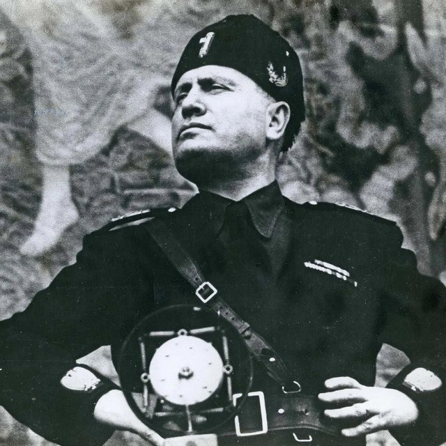
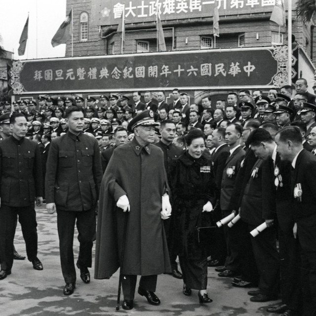

The Eclectic Polymath Podcast · Archive
#172 Benito Mussolini: How Fascism Took Over Italy

About this episode
Before fascism became a global political force, Benito Mussolini was figuring out how to build it. Once a socialist, he broke with the movement during World War I, founded the Italian Fascist movement, and used the instability of postwar Italy to position himself for power after the March on Rome in 1922.
This episode traces how Mussolini turned that opening into dictatorship: Blackshirt violence, propaganda, attacks on political opposition, and cooperation from institutions that believed they could contain or benefit from him. Rather than replacing democracy overnight, fascism tightened its grip piece by piece until meaningful opposition had largely disappeared.
Key points
- Before fascism became a global political force, Benito Mussolini was figuring out how to build it.
- Once a socialist, he broke with the movement during World War I, founded the Italian Fascist movement, and used the instability of postwar Italy to position himself for power after the March on Rome in 1922.
- This episode traces how Mussolini turned that opening into dictatorship: Blackshirt violence, propaganda, attacks on political opposition, and cooperation from institutions that believed they could contain or benefit from him.
- We follow Mussolini through imperial expansion, his alliance with Hitler, Italy’s disastrous war, and his eventual collapse and execution in 1945.
More like this
 #193 Why Cuba Is Where People Go to VanishOctober 6, 202651:56
#193 Why Cuba Is Where People Go to VanishOctober 6, 202651:56 #194 Obama's Shadow Wars: Drones, Raids, and the Power Vacuums They Left BehindOctober 6, 202647:36
#194 Obama's Shadow Wars: Drones, Raids, and the Power Vacuums They Left BehindOctober 6, 202647:36 #187 Philippines: How a Nation Remade What Empires Left BehindOctober 3, 202659:03
#187 Philippines: How a Nation Remade What Empires Left BehindOctober 3, 202659:03
#178 Taiwan: The Island at the Center of the 21st CenturySeptember 24, 20261:06:23